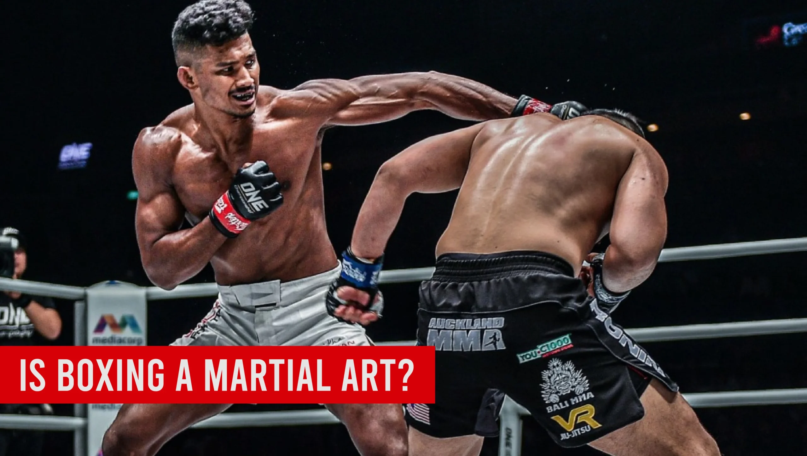
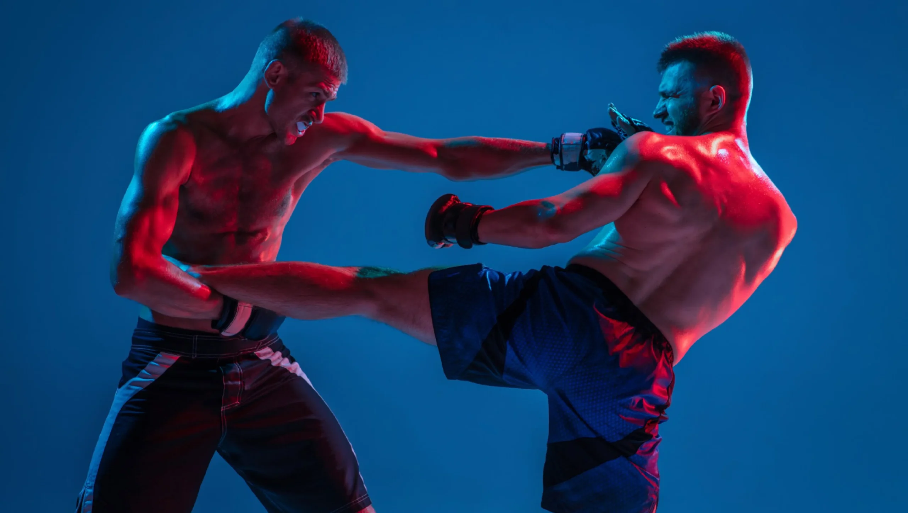
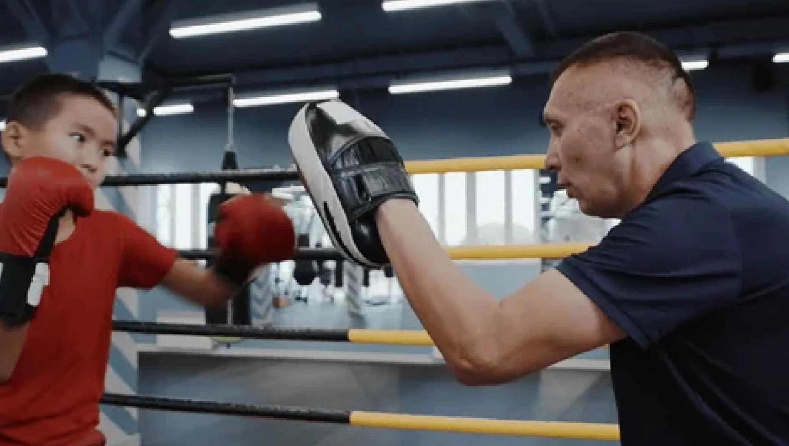

Is Boxing A Martial Art? Comparing It to Other Martial Arts Forms

Introduction
In this blog post, let’s dive into a fun, “Is boxing a martial art?” It’ll be interesting to see how they each bring something unique. This inquiry highlights the distinct characteristics of boxing and its practice while examining the broader context of martial arts as a whole. The discussion will delve into the historical origins, techniques, philosophies, and purposes of boxing versus other martial arts, providing a comprehensive understanding of their similarities and differences.
Martial arts, in a nutshell, are various practices and systems of combat that have developed over centuries. Boxing, with its rich history and unique techniques, has often sparked debates about its classification as a martial art. Understanding this classification is significant, especially when comparing it with other martial arts like karate, judo, or taekwondo. So, let’s jump into this fascinating topic and see how boxing stacks up against its martial arts counterparts!
Key Points
- Definition and understanding of martial arts.
- Historical background of boxing.
- Core components that define martial arts.
- Comparative analysis of boxing with various martial arts.
- Philosophical and cultural differences in martial arts.
- Techniques and training methods differences.
- The purpose behind boxing and martial arts.
What Are Martial Arts?
Martial arts are a broad range of practices and systems of combat that have evolved across different cultures. They originated for various reasons, including self-defense, military training, and even spiritual development.
Table
Martial arts encompass striking, grappling, and weapon-based techniques. They often include a philosophical aspect, focusing on respect, discipline, and personal development.
Historical Origins of Boxing
Boxing has a fascinating history that dates back to ancient civilizations. The earliest evidence of boxing can be traced to ancient Egypt around 3000 BC, where drawings depict fistfighting. The Greeks adopted boxing in the 8th century BC, incorporating it into the Olympic Games.
Over time, boxing evolved into the modern sport we know today. The introduction of the Marquess of Queensberry rules in the 19th century established the framework for professional boxing, including the use of gloves and a defined ring.
Table
Key Characteristics of Boxing
Boxing is defined by several essential features. It primarily focuses on striking with the hands, employing various punches and defensive techniques.
Footwork is crucial in boxing, allowing fighters to move quickly and evade strikes. The competitive structure includes rounds and judges who score fights based on technique, effectiveness, and control.
Table
Comparing Boxing to Other Martial Arts
When asking, “Is boxing a martial art?”, it’s helpful to compare boxing with different types of martial arts to get a clear understanding.
Boxing primarily involves hand strikes, while many martial arts incorporate kicks, throws, and grappling techniques. For example, karate emphasizes striking with both hands and feet, whereas judo focuses on throws and holds.
Culturally, martial arts often emphasize respect, tradition, and personal growth. Boxing, while it has its own codes of conduct, is often viewed more than a sport focused on competition.
Techniques in Boxing vs. Other Martial Arts
In boxing, the emphasis is on punches and footwork. Boxers train extensively on combinations and defensive maneuvers.
On the other hand, martial arts like karate and taekwondo incorporate a broader range of techniques, including kicks and blocks.
Table
Philosophical Underpinnings of Martial Arts
Philosophy plays a significant role in martial arts training. While boxing focuses on competition and physical prowess, many martial arts emphasize ethical and moral codes.
For instance, martial arts like karate and taekwondo often include teachings about respect, humility, and self-discipline. Boxers also learn discipline through training, but the focus is more on performance and winning.

Training Regimens: Boxing vs. Martial Arts
Training methods vary significantly between boxing and other martial arts.
Boxers typically engage in rigorous conditioning, focusing on stamina, strength, and technique. They practice drills, spar, and participate in paid work sessions to refine their skills.
In contrast, martial arts training encompasses a wider variety of practices. For example, in karate, students may spend a lot of time on kata, which are pre-arranged sequences of movements that help practitioners learn techniques and movements in a structured way. Judo practitioners spend considerable time learning how to fall safely, execute throws, and apply holds.
Table
Common Misconceptions About Boxing as Martial Arts
When we explore the question, “Is boxing a martial art?”, several misconceptions often arise. Some people argue that boxing is merely a sport and does not fit within the traditional martial arts category. This viewpoint usually stems from the emphasis in boxing on competition and winning, often at the expense of the philosophical aspects found in other martial arts.
However, boxing embodies many martial art elements: it requires skill, discipline, and respect for the opponent. While its competitive nature is prominent, it also nurtures personal growth and self-defense skills.
A common argument against boxing as a martial art is the perception that it lacks a comprehensive set of techniques compared to other arts. However, mastering boxing techniques—like footwork, combinations, and defensive maneuvers—demands extensive training and dedication.
The Role of Self-Defense in Boxing and Martial Arts
Self-defense is a critical aspect of martial arts training. Many people practice martial arts expecting to improve their self-defense skills against potential threats.
Boxing equips practitioners with essential self-defense skills. The ability to throw effective punches, move quickly, and evade attacks can be incredibly helpful in real-life situations. However, unlike some martial arts that emphasize grappling and ground techniques, boxing tends to focus solely on striking.
Martial arts such as jiu-jitsu and krav maga offer broader self-defense techniques, including how to handle grabs, takedowns, and even multiple attackers. Each discipline provides valuable skills adapted to different scenarios.
Table
Competitive Aspects vs. Traditional Practices
The competitive format of boxing sets it apart from traditional martial arts. While boxing focuses primarily on sport and competition, many martial arts remain rooted in culture and tradition.
Boxing matches emphasize winning through points or knockouts, while martial arts competitions can include forms (kata), sparring with points, and self-defense demonstrations. This difference shapes how students approach their training—the goal in boxing is to win fights, while in many martial arts, the focus extends beyond competition to personal growth and community values.
This competitive framework affects perception, often aligning boxing with sports rather than an art form. However, the skill, strategy, and discipline involved in boxing can certainly be viewed through the lens of martial arts.

Benefits of Practicing Boxing
Practicing boxing offers numerous benefits, both physically and mentally. Some of these include:
- Fitness: Boxing training provides a fantastic workout that improves cardiovascular health, strength, and endurance.
- Discipline: The structure of boxing training fosters focus and seriousness about skill development.
- Stress Relief: Hitting a bag or sparring can be a great outlet for stress and frustration. It’s a powerful way to blow off steam!
Comparing these to traditional martial arts, while they also promote fitness and discipline, many focus more on the philosophical elements of practice, such as mindfulness and inner peace. However, many people find the intensity of boxing a unique and rewarding experience.
The Global Impact of Boxing and Martial Arts
Both boxing and martial arts are popular worldwide, impacting culture and communities. Boxing, with its long history, often enjoys vast audiences during major fights, showcasing athleticism and skill.
On the other hand, martial arts are celebrated for their rich traditions and community involvement. Many practitioners engage in cultural events and demonstrations, promoting not just physical skills but also values and a sense of belonging.
According to recent statistics, martial arts participation has grown significantly, with millions training worldwide for fitness, self-defense, and competition. Boxing remains a major part of the sporting landscape, drawing attention from fans and athletes around the globe.
Table
Conclusion
As we’ve explored the various facets of boxing and its classification as a martial art, it becomes clear that boxing embodies many martial arts principles and practices.
Boxing focuses on striking with a unique set of techniques, while other martial arts offer broader skill sets encompassing kicks and throws. The philosophical underpinnings, training methods, and cultural significance also differ across disciplines.
So, is boxing a martial art? Absolutely! It encompasses skill, discipline, and respect just like other martial arts forms, but with its own unique twist. Understanding and appreciating the differences and similarities encourages a broader appreciation for all forms of combat sports, highlighting the diversity within martial arts.
FAQ's
The best martial art for beginners depends on personal goals and preferences. Brazilian Jiu-Jitsu (BJJ) is favored for its focus on technique, making it accessible for all. Karate is also a strong choice, emphasizing basic movements and self-discipline. It’s beneficial for beginners to try different classes to find what suits them best.
There is no age limit for starting martial arts! People of all ages can benefit from training. Many schools offer adult classes that cater to newcomers, allowing them to learn at their own pace and enjoy the physical and mental benefits of martial arts.
The cost of martial arts training varies by school, location, and class types. Many schools offer flexible pricing, including monthly memberships or per-class fees. It’s wise to explore different options to find a budget-friendly school that meets your needs.
Participation costs typically range from $100 to $150 per month for memberships, with per-class rates between $15 and $30. Annual memberships may be available for $800 to $1,200, often providing savings. Additionally, consider any extra fees for uniforms and equipment.
For your first day, wear comfortable athletic clothing. Most schools will provide a uniform (like a gi) for you to wear once you enroll, but you want to be ready to move in whatever you choose! Just check with the school beforehand to see if they have any specific requirements.
The time it takes to earn a belt varies widely based on the martial art and your dedication. Generally, it can range from 3 months to several years. Factors influencing this timeline include attendance, effort, and the specific belt progression system of the style you are learning.
Absolutely! Martial arts classes are intended for all fitness levels. Many schools offer beginner programs that help you gradually build your strength and flexibility, so don’t worry if you’re starting from scratch!
Train with us in Coppell
The first class is free. Shorts, a t-shirt and a water bottle. We lend the rest.
Book a free class